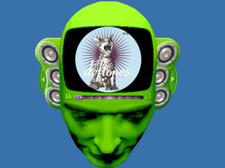
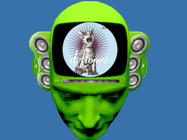

ZENITH-Worm
June3, 2025
worm MP3
 

This is an mp3 player I'm making that pulls the appropriate album art from a directory and cuts the image to a circle like a CD and then rotates it on top of my animation. The head animation is from an old skin of Windows Media Player I used to like when I was a kid. Sad they got rid of these after Windows XP. Honestly windows XP was the last time I actually liked windows. Anyways it's got a functional volume control I set to incriments of 20%, obviously controlled with volume up and down on the remote.
Still a work in progress, my play/pause works but when i play to resume it starts the song over annoyingly.